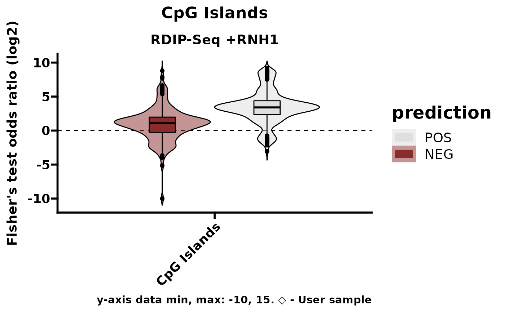
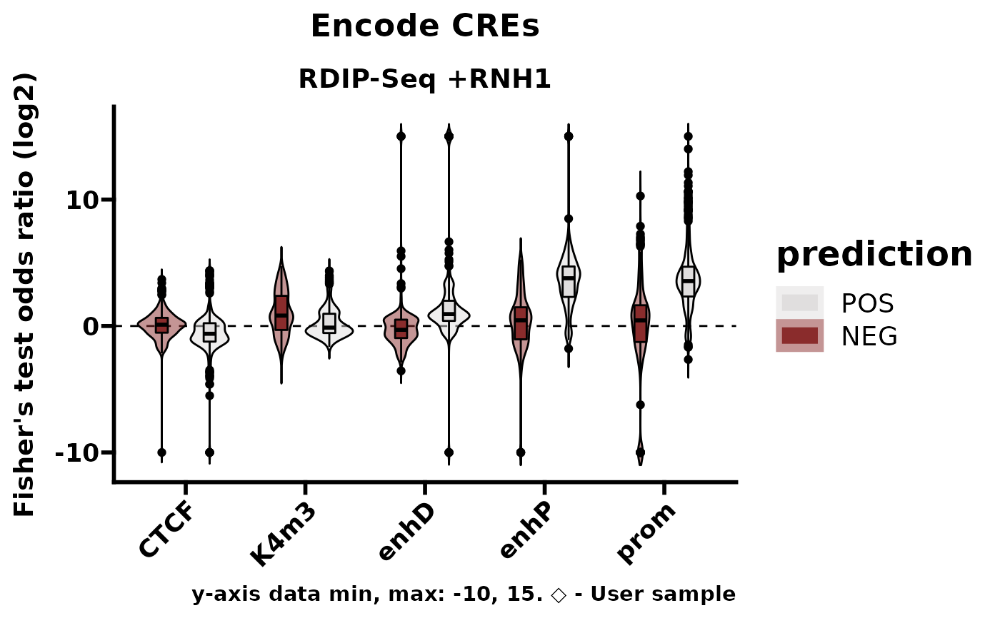
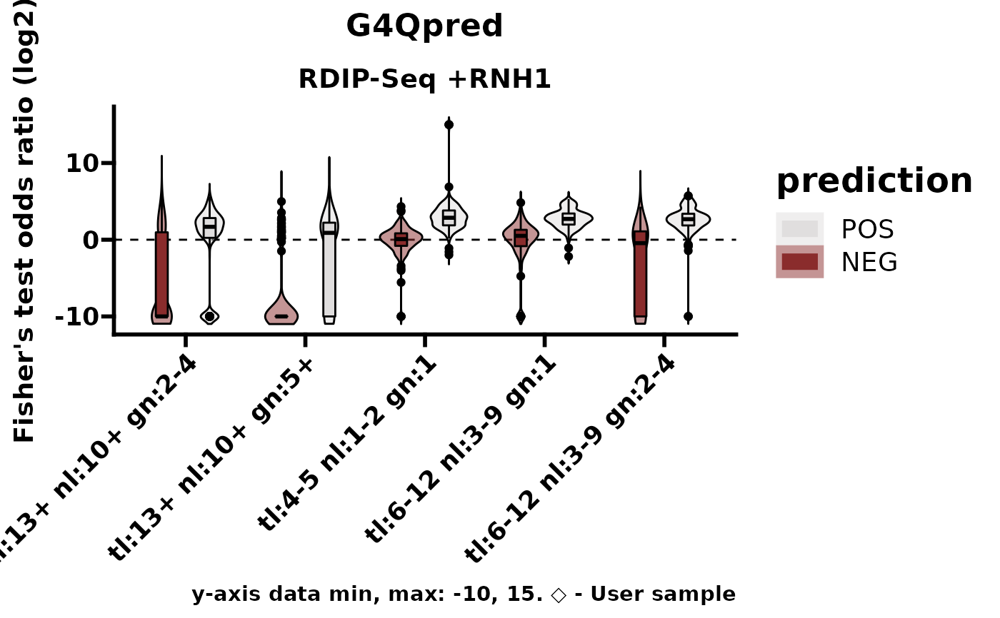
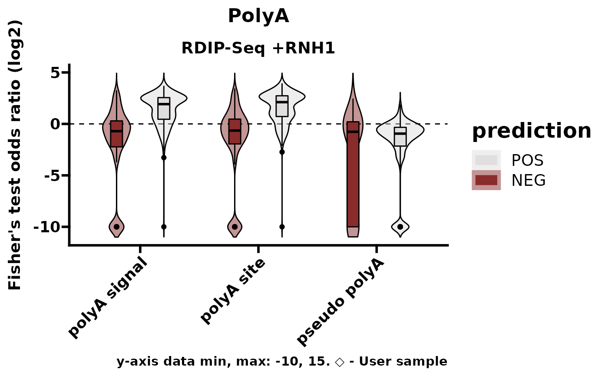
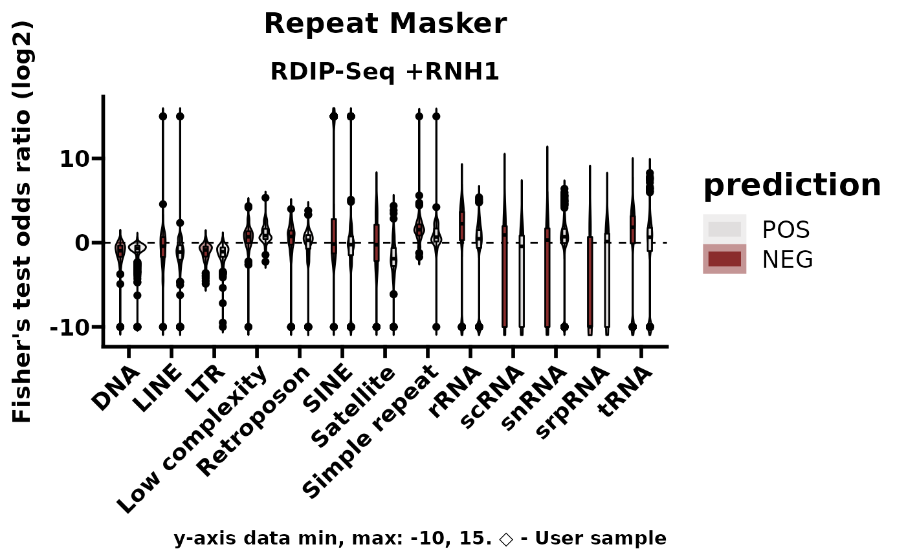
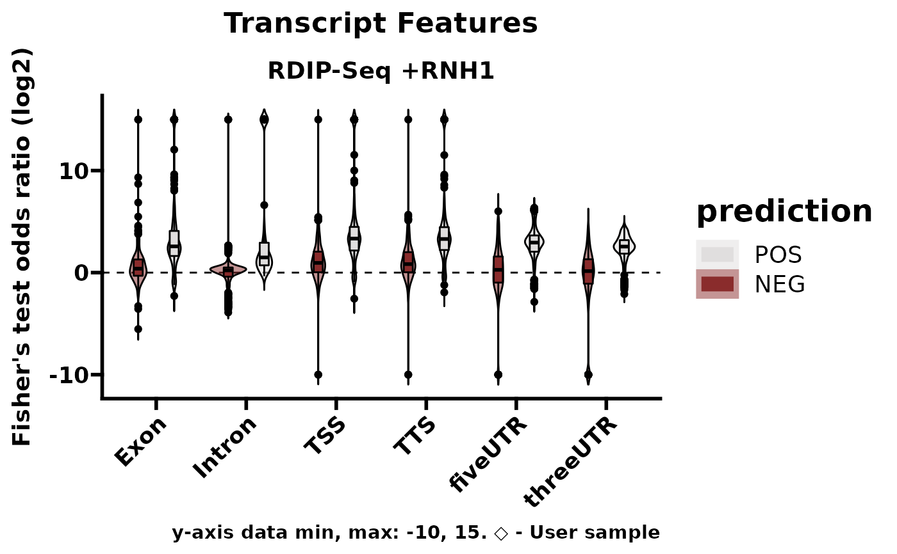
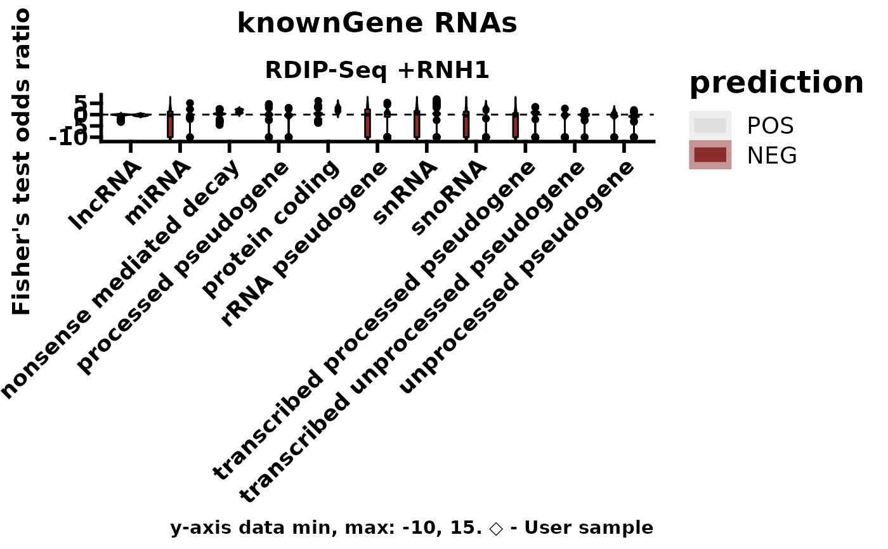
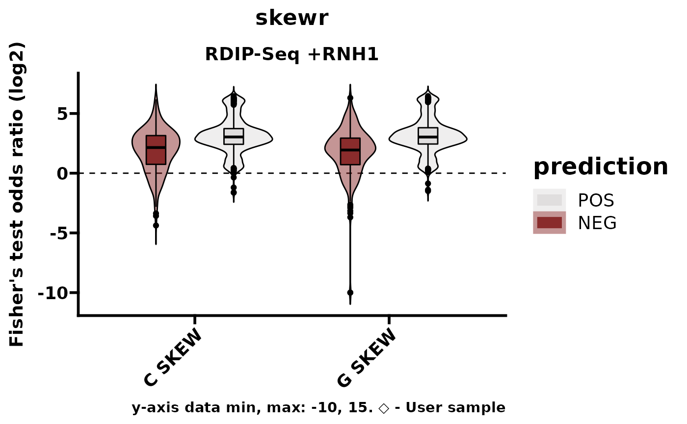
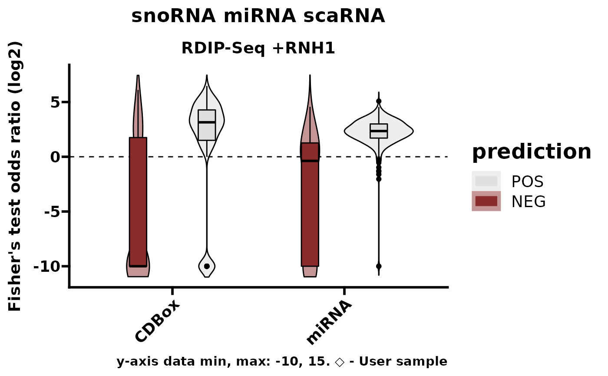
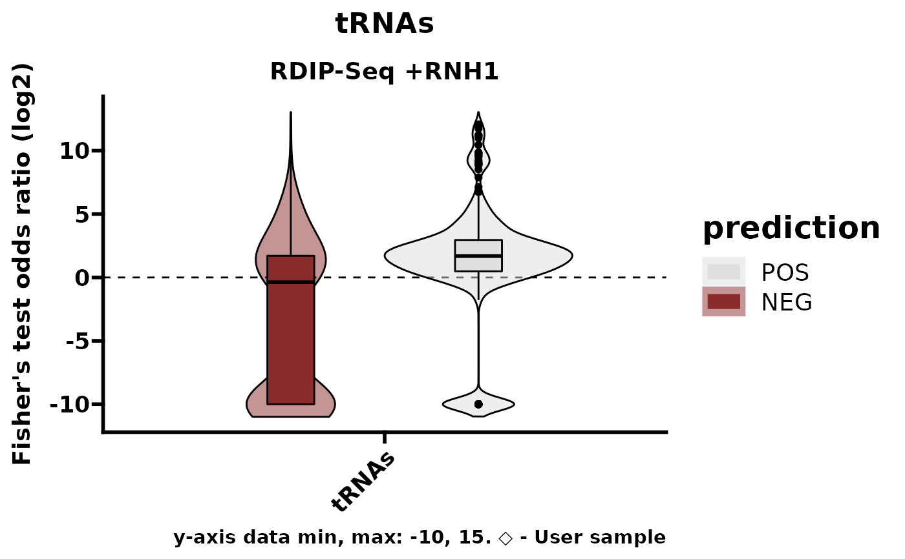

Creates a list of plots, one for each annotation database (see RLHub::annotations). These plots show the feature enrichment for the user-supplied sample in comparison to the samples in RLBase. This will only work if you did not use custom annotations with featureEnrich.
An RLRanges object with featureEnrich already run.
If TRUE, only "POS" predicted samples included (see also predictCondition). Default: TRUE.
If TRUE, only "POS" labeled samples included (samples which are expected to robustly map R-loops, e.g., "D210N" condition R-ChIP data). Default: FALSE.
Metadata by which to split plots. Can be "none", "prediction", or "label".
Specify limits on data range. This is used for controlling the infinite estimation of odds ratio resulting from fisher's exact test. To remove limits, set c(-Inf, Inf). Default: c(-10, 15).
If TRUE, plot data is returned instead of plot objects. Default: FALSE
For internal use.
A named list of ggplot2::ggplot objects. Names correspond to the annotations provided. See also featureEnrich.
# Example dataset with featureEnrich() already run.
rlr <- readRDS(system.file("extdata", "rlrsmall.rds", package = "RLSeq"))
# Make plots, split by prediction
plotEnrichment(rlr, pred_POS_only = FALSE, splitby = "prediction")
#> see ?RLHub and browseVignettes('RLHub') for documentation
#> see ?RLHub and browseVignettes('RLHub') for documentation
#> Warning: User-supplied sample test value is NA for CpG_Islands. Cannot plot.
#> Warning: User-supplied sample test value is NA for Encode_CREs. Cannot plot.
#> Warning: User-supplied sample test value is NA for G4Qpred. Cannot plot.
#> Warning: User-supplied sample test value is NA for PolyA. Cannot plot.
#> Warning: User-supplied sample test value is NA for Repeat_Masker. Cannot plot.
#> Warning: User-supplied sample test value is NA for Transcript_Features. Cannot plot.
#> Warning: User-supplied sample test value is NA for knownGene_RNAs. Cannot plot.
#> Warning: User-supplied sample test value is NA for skewr. Cannot plot.
#> Warning: User-supplied sample test value is NA for snoRNA_miRNA_scaRNA. Cannot plot.
#> Warning: User-supplied sample test value is NA for tRNAs. Cannot plot.
#> $CpG_Islands

#>
#> $Encode_CREs

#>
#> $G4Qpred

#>
#> $PolyA

#>
#> $Repeat_Masker

#>
#> $Transcript_Features

#>
#> $knownGene_RNAs

#>
#> $skewr

#>
#> $snoRNA_miRNA_scaRNA

#>
#> $tRNAs

#>